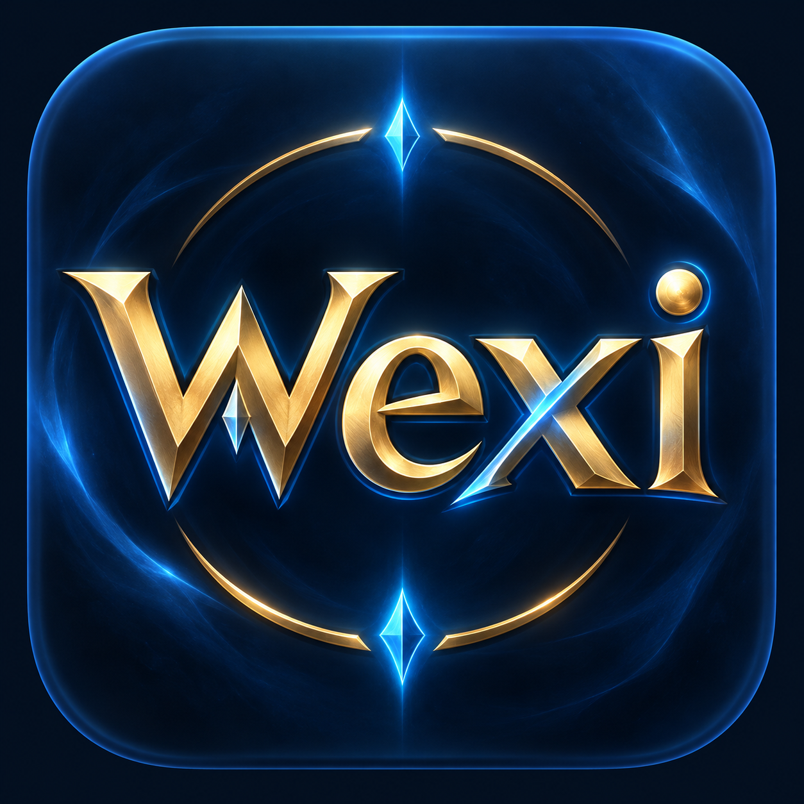
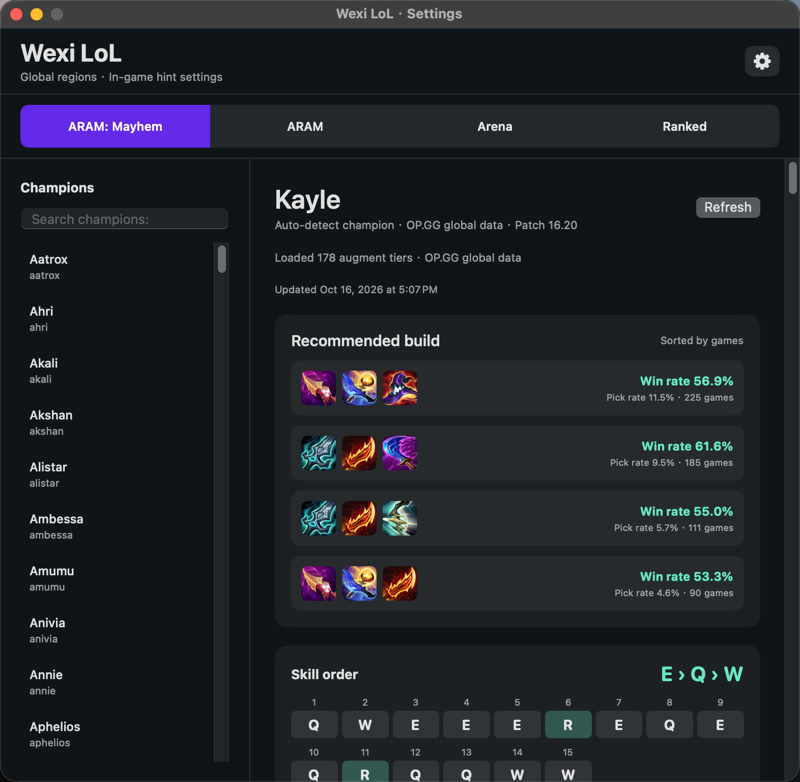

Augment ratings
Recognizes augment cards and places the matching S / T rating beside each choice.

Wexi LoL View on GitHubWexi LoL 是为 macOS 打造的英雄联盟游戏内辅助工具。
Native augment ratings, recommended builds, objective timers, and player scouting—built for League players on Mac.

Useful information at a glance, without blocking the League client.
Recognizes augment cards and places the matching S / T rating beside each choice.
Shows popular three-item routes with win rate, pick rate, and the next item.
Tracks Rift objectives and ARAM health relic countdowns in game.
Loads rank, season win rate, and recent results once during the loading screen.
Choose the language used by your League client. Wexi loads matching OP.GG augment names and the corresponding macOS Vision OCR model.
支持简体中文、繁體中文、English、한국어、日本語、Français、Deutsch、Español、Português、Русский、Türkçe、Polski、Italiano、ไทย和Tiếng Việt。
Free, native, and open source. The latest release is available as a DMG.